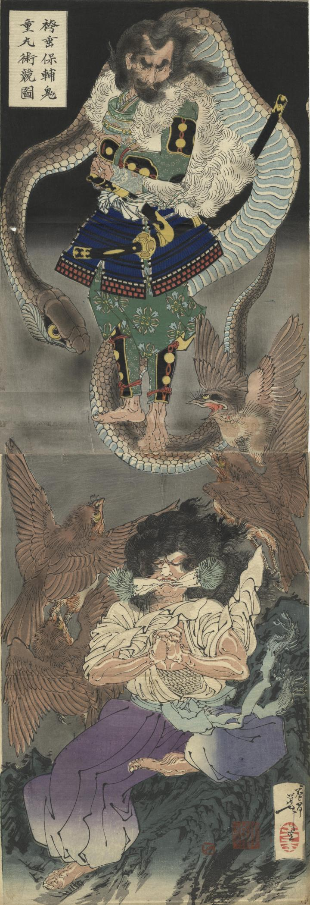

盗賊の袴垂保輔と鬼の鬼童丸が術競べをする。鬼童丸が大蛇を呼び寄せて袴垂保輔を襲わせ、袴垂保輔は妖鳥を呼び寄せ対抗した。
著作者：芳年／出典：親書誌：U426_nichibunken_0372：袴垂保輔鬼童丸術競圖；ハカマダレ ヤススケ キドウマル ジュツクラベ ノ ズ／日付：2014／資源識別子：U426_nichibunken_0372_0001_0000
Copyright (c)2010- International Research Center for Japanese Studies, Kyoto, Japan. All rights reserved.